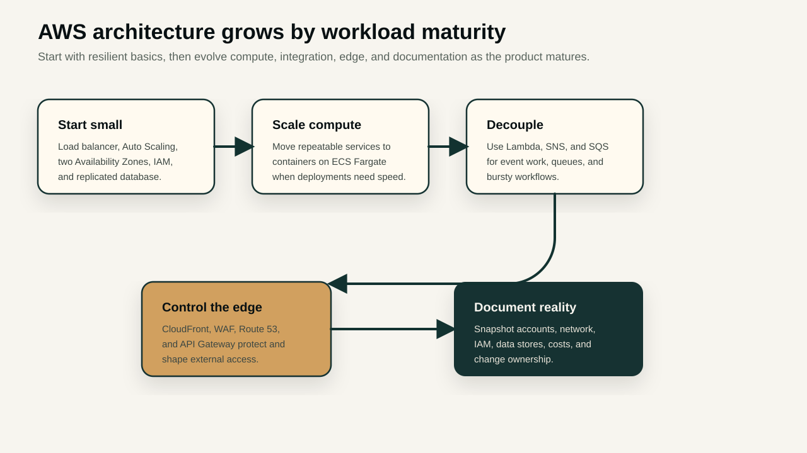
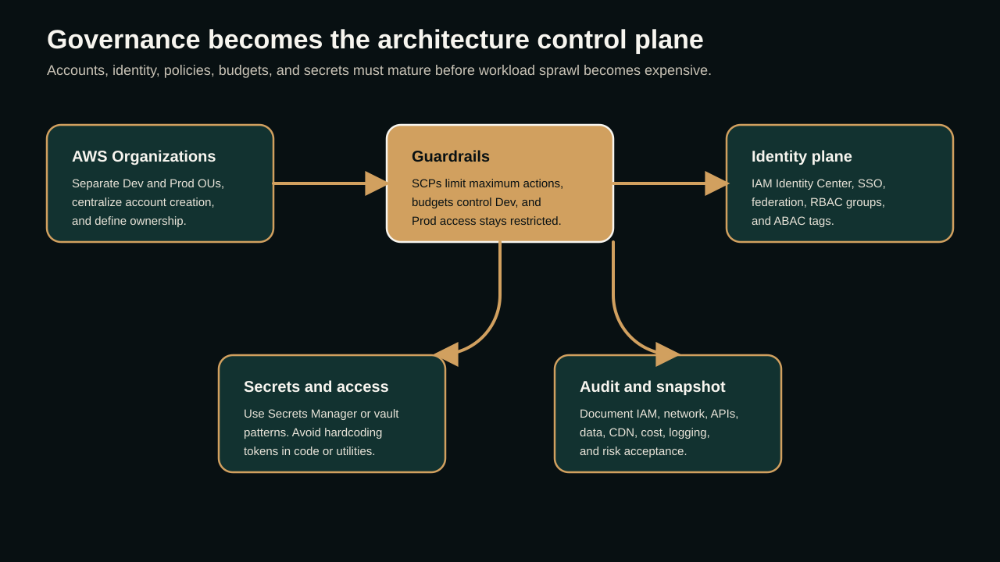

01 · Know where you are
Start with the smallest architecture that is still resilient
The first architect decision is not which advanced AWS service looks impressive. It is where the workload is today. If the product is just starting, begin with a clear baseline: a load balancer, a small Auto Scaling group, two Availability Zones, simple IAM controls, and one database with replication or recovery configured.
A practical early setup might use two or three application hosts behind an Application Load Balancer, with capacity configured so at least one instance is active and another can scale in a different Availability Zone. Keep the database simple at this stage, but do not keep it fragile. Enable backups, replication where appropriate, encryption, and a restoration process that someone has actually tested.
Early AWS baseline
VPC with public and private subnets across two Availability Zones
Application Load Balancer at the edge of the workload
Auto Scaling group with measured minimum, desired, and burst capacity
IAM roles for services, no long-lived keys on servers
Single database tier with backups, encryption, and replication or standby design
CloudWatch alarms for health, latency, saturation, and cost signals02 · Scale deliberately
Microservices are useful when boundaries are real
Microservices should not be used just because the team wants a modern diagram. They become useful when parts of the system have different release cycles, scaling patterns, data ownership, compliance requirements, or failure domains. If every service changes together and shares the same database, the architecture may still be a distributed monolith with more operational cost.
When the boundaries are real, containers become a strong next step. ECS with Fargate is a good fit when teams want container isolation and scaling without managing EC2 capacity. It lets teams focus on task definitions, service health, networking, deployment strategy, logs, and IAM roles instead of cluster patching and instance capacity management.

03 · Organize accounts before growth becomes sprawl
Use OUs, budgets, SCPs, RBAC, and ABAC as architecture controls
As the environment grows, a single AWS account becomes a risk and a bottleneck. Move toward AWS Organizations with separate OUs for Dev and Prod. Dev should have strict budgets, sandbox boundaries, and room to experiment safely. Prod should have tighter access, protected networking, restricted administrative actions, and explicit change control.
Service control policies are guardrails, not permission grants. They define the maximum actions an account can use. Combine SCPs with permission sets, IAM groups, IAM Identity Center, federation, RBAC, and ABAC so users get the right access through identity and attributes instead of shared admin accounts.
- Dev OU: budgets, region restrictions if needed, sandbox reset process, and clear tagging ownership.
- Prod OU: restricted admin, stronger change approval, protected logging, and guardrails against disabling security controls.
- Shared services: central networking, DNS, logging, security tooling, and CI/CD integration where appropriate.
- Identity: SSO/federation first, service roles for workloads, and no human dependency on long-lived access keys.

04 · Use serverless for the right opportunities
Lambda, SNS, and SQS are strongest when the workflow is event-driven
Serverless is powerful when work is event-based, intermittent, asynchronous, or easy to split into small responsibilities. Lambda can process events without keeping servers warm. SNS can fan out notifications. SQS can buffer work and protect downstream services from spikes. Step Functions can coordinate workflows when the process has multiple states and failure paths.
The architecture question is simple: does this need a continuously running service, or does it need a reliable reaction to an event? If it is the second one, serverless can reduce operational load and make scaling behavior more natural.
05 · Protect secrets and borrowed access
Hardcoded credentials are architecture debt
Secrets should not live inside scripts, AMIs, containers, repositories, or utility configuration files. Use AWS Secrets Manager, Parameter Store, or a vault-backed pattern to retrieve sensitive values at runtime. Rotate secrets where possible, scope them to the workload, and log access without exposing values.
For temporary or borrowed access, prefer federation, roles, session duration controls, and just-in-time approval over shared credentials. A good AWS design makes it easier to remove access than to forget where access was copied.
Architect note
Every utility, script, pipeline, and container should answer the same question: how does this authenticate without embedding a secret that will be forgotten later?
06 · Control CDN and API entry points
The public edge should be boring, observable, and intentional
CloudFront, Route 53, WAF, ACM certificates, and API Gateway are not just performance pieces. They are control points. They decide what becomes public, how traffic is shaped, where TLS terminates, how APIs are throttled, and how abuse is blocked before it reaches the application.
Treat the edge as part of the architecture, not a final polish step. Define caching behavior, origin access, API throttling, custom domain ownership, logging, and incident routing before traffic volume makes changes risky.
07 · Snapshot and document infrastructure
Documentation should describe the real environment, not the launch plan
Infrastructure documentation is useful only when it reflects the current state. Build a recurring snapshot process that captures accounts, VPCs, subnets, security groups, load balancers, compute services, databases, IAM roles, permission sets, secrets, CDN distributions, API Gateway routes, budgets, alarms, and owners.
The goal is not a pretty diagram once a year. The goal is operational clarity. When an incident happens, the team should know which account owns the service, which API is exposed, which role has access, which database stores data, which alarms exist, and where the last known architecture snapshot lives.
08 · Additional architect checks
Add these decisions before the platform gets too comfortable
- Define tagging standards for owner, environment, cost center, data classification, application, and lifecycle.
- Centralize logs early with retention rules, security ownership, and incident search patterns.
- Use infrastructure as code for repeatability, review, rollback, and drift visibility.
- Design backup and restore before designing disaster recovery slides.
- Keep network segmentation understandable: fewer clever routes, clearer ownership, stronger inspection points.
- Review cost as an architecture signal, not a finance surprise.
- Use the AWS Well-Architected lens as a recurring review habit, not a one-time certification exercise.
09 · Utility links
References for building the playbook
- AWS Well-Architected FrameworkUse as the review model for reliability, security, operational excellence, performance, cost, and sustainability decisions.
- AWS Fargate for Amazon ECSReference for running containers without managing EC2 cluster capacity.
- AWS Organizations service control policiesUse SCPs as maximum-permission guardrails across accounts and OUs.
- ABAC in IAM Identity CenterDesign attribute-driven access using user attributes and tags.
- Create ABAC permission policiesReference for permission policies that use configured attribute values.